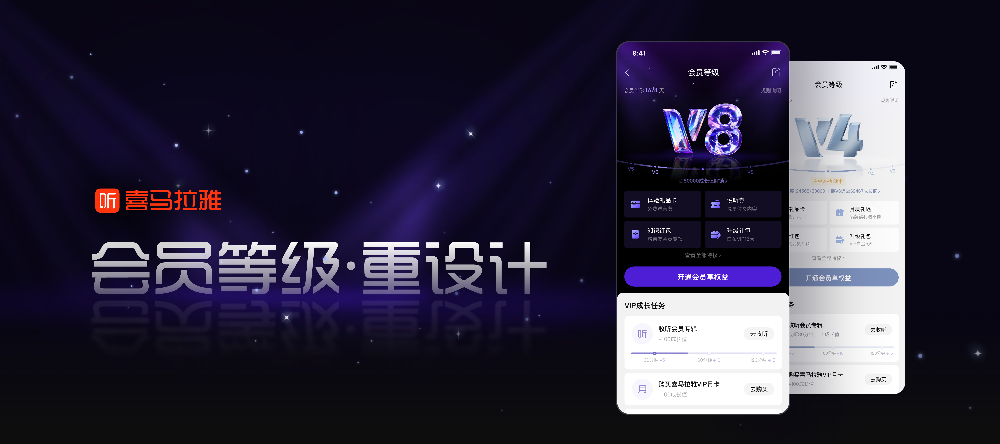
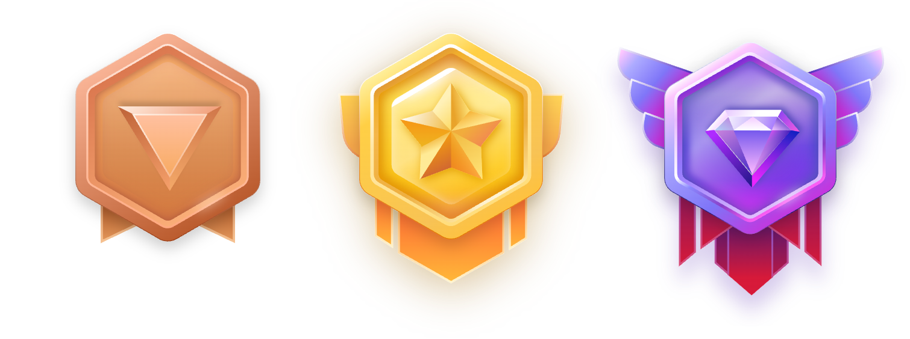
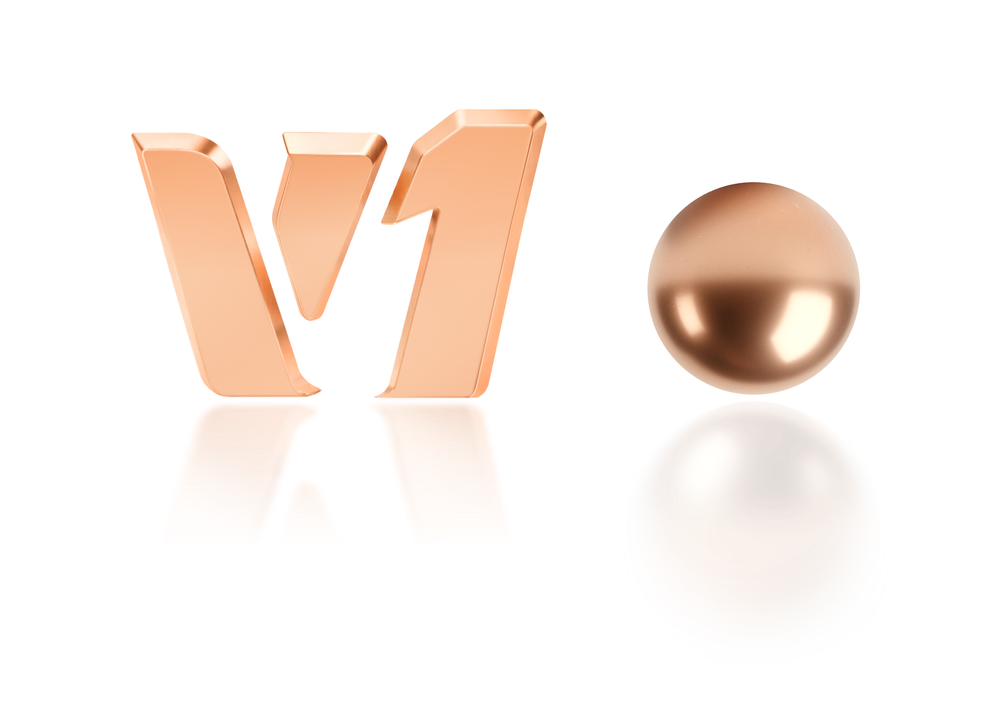
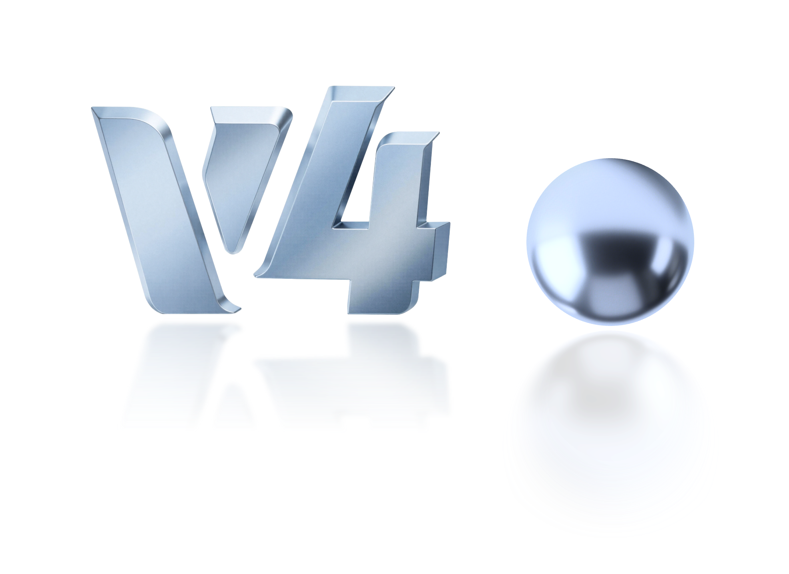
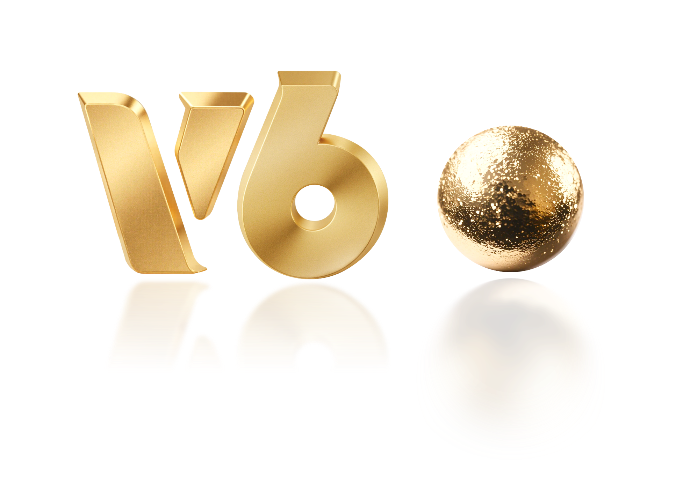
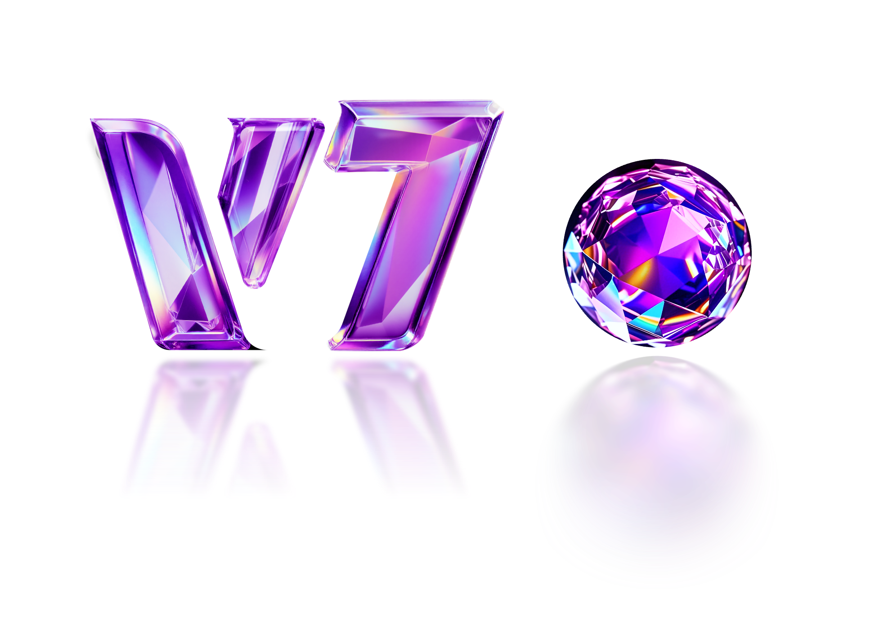
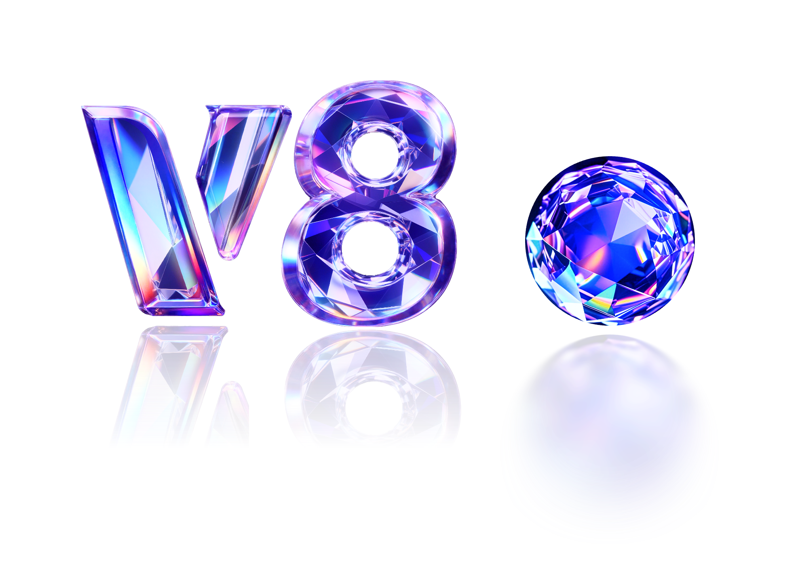
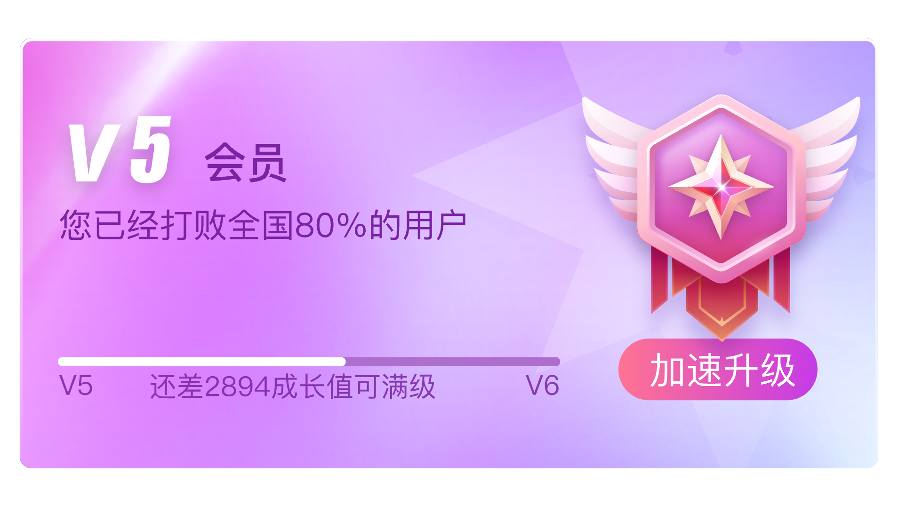
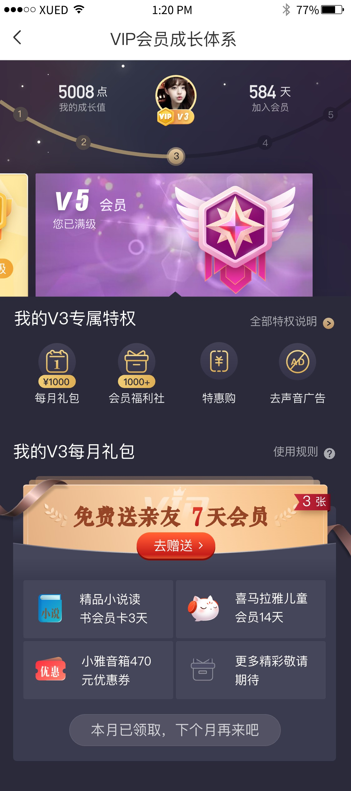
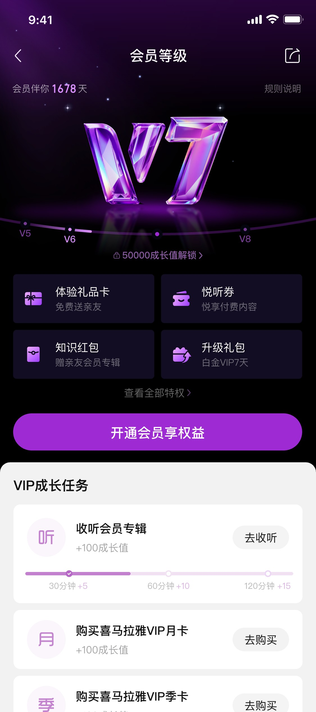

会员等级 Redesign
喜马拉雅会员等级视觉体系升级——从老旧的金属勋章，到统一的 V1–V8 宝石等级体系，强化用户的进阶感与尊贵感。
会员等级是喜马拉雅维系用户长期活跃的核心激励机制。本次配合运营部门的会员权益升级，对等级视觉体系进行了一次彻底的 redesign——重新定义宝石视觉风格，建立 V1–V8 的进阶层次，并重构各等级页面。由我主导视觉方向与页面设计。
现有问题分析
早期等级从 5 级逐步拆成 7 级，页面一直在老框架上叠加迭代，积累了大量补丁式改版。视觉老旧、缺乏体系、进阶感弱，已经无法承接新一轮的会员权益升级。
建立统一、有进阶感与尊贵感的等级视觉体系，重构页面让升级动机清晰可感——刺激用户提升等级，延长在线时长，提升活跃度与粘性。
改版前后对比
单体对比 — 隐喻升级
把旧的金属勋章和新的宝石放大对照，一眼传达「勋章 → 宝石」的核心隐喻。

旧版：金属勋章风格，质感陈旧，等级间区分度低。





新版：统一宝石材质，华丽、稀缺、可识别。
气质升级 — 游戏感 → 尊贵感
旧版徽章游戏风格过重，卡片装饰繁复干扰信息呈现，与喜马拉雅内容产品的整体调性不符；新版以宝石材质重建视觉语言，克制、稀缺、尊贵。

- 游戏化角色徽章，风格老旧
- 卡片装饰繁复，干扰信息呈现
- 「打败80%用户」话术，与尊贵感背道而驰

- 宝石材质，克制稀缺
- 纯净背景，权益信息无干扰呈现
- 视觉语言与整体产品调性一致
实景对比 — 落到使用场景
把改动放回真实的会员中心页面里，看到的不只是图标，而是一整套体验的更新。

旧页面：信息堆叠，等级标识不突出。

新页面：宝石主导视觉，权益层次清晰。
视觉设计规范
以金色与宝石色为核心，搭配深色背景，构建华丽、尊贵的视觉系统。沉淀 V1–V8 等级标识母版、宝石视觉规范，以及升级弹窗、权益对比等核心组件。
色彩
字体 · PingFang SC
等级标识
组件
项目成果
全新等级视觉体系配合会员权益升级上线，等级页的进阶感与尊贵感显著增强，有效带动了用户的升级与活跃。
* 数据为项目上线后阶段性表现，用于示意设计价值。